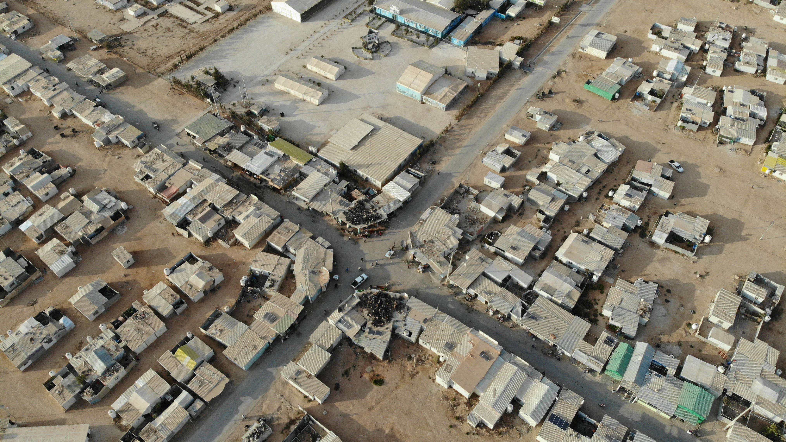

The Zaatari Refugee Camp located in Northern Jordan, as of April 30th 2021, is home to 79,208 refugees. Zaatari camp is under joint administration by the Syrian Refugee Affiars directorate, and the United Nations High Commissioner for Refugees. You can learn more about Zaatari here.
Click anywhere on the map to see water sites within a 500m radius. Stand alone water sites will be highlighted in red.